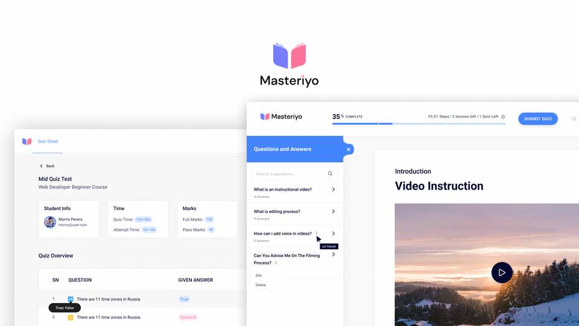

Masteriyo LMS
Contributed to the Figma design of Masteriyo LMS as part of a product design team. This page is framed as a contribution, not sole ownership.

Role
Product Design Contributor
Product
WordPress LMS
Contribution
Figma interface design support
What I worked on
- Contributed to the product interface design in Figma.
- Supported LMS screen exploration and learning management UI direction.
- Worked within a multi-designer team context.
- Focused on clear course and education product interface patterns.
This project is intentionally written as a team-based contribution to avoid overstating ownership.